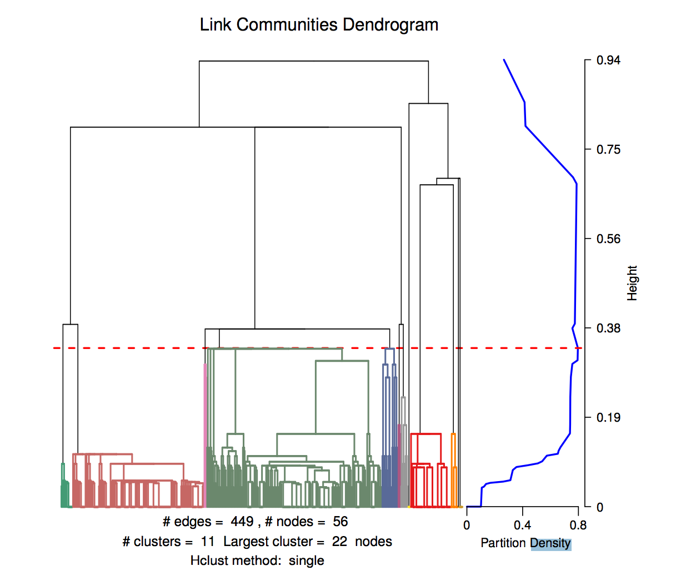
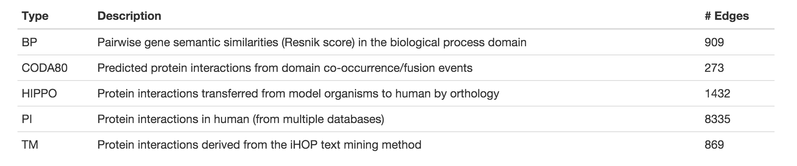
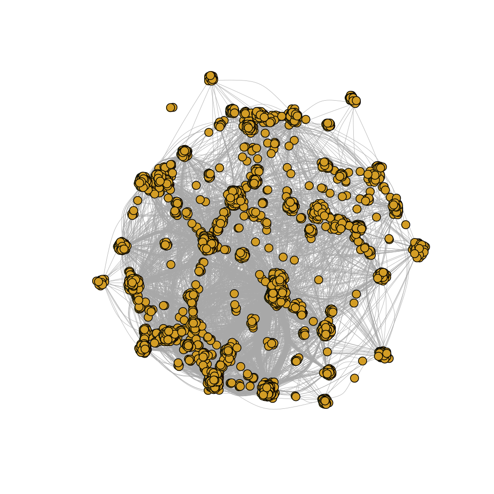
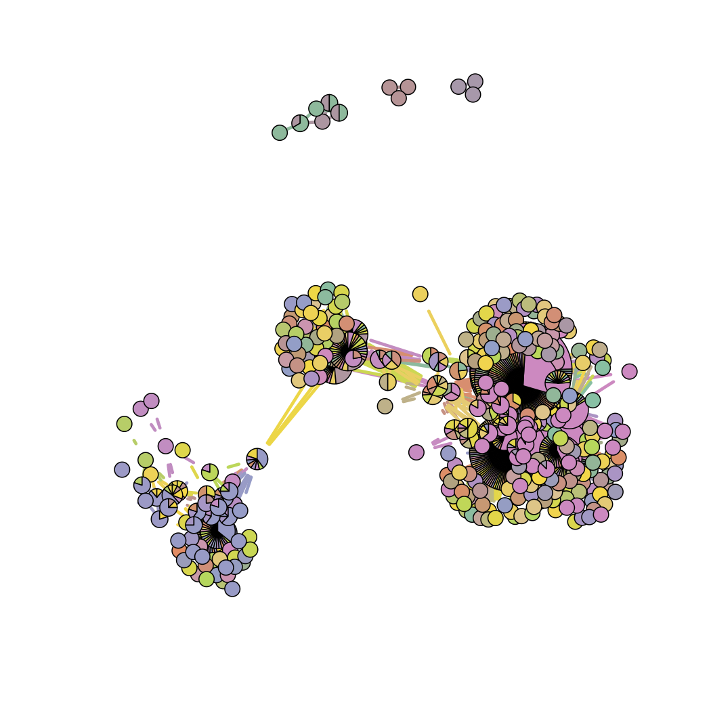

Cluster detection, analysis and visualization
Author: Aaron Brooks / @scalefreegan
You can follow along on 
http://scalefreegan.github.io/Teaching/DataIntegration
Goals: Cluster Visualization
- Basic visualizations: Heatmap, Cluster dendrogram
- Advanced visualization: Network-based visualization, Cytoscape
- Biological recap. Why are we doing this?
- Extensions
We've clustered the data...
We've chosen k...
Now what?
Visualization
There are many things one could do with these networks
Some functions available in linkcomm package
Cluster dendrogram
plot(network, type = "summary")
Relationships between communities
cr = getClusterRelatedness(network, hcmethod = "ward")
cutDendrogramAt(cr, cutat = 1.2)
Community membership
plot(network, type = "members")
Plot
plot(network, type = "graph", layout = layout.fruchterman.reingold)
plot(lc, type = "graph", layout = "spencer.circle")
Plot
plot(network, type = "graph", shownodesin = 2, node.pies = TRUE)
Why cluster a network?
Clustering is a way to decipher network structure
Hairball ⇨ Comprehension
Lesson from experience: EGRIN 2.0

Brooks and Reiss et al (2014). A system‐level model for the microbial regulatory genome
Conditionally Co-regulated Modules (Corems)

Brooks and Reiss et al (2014). A system‐level model for the microbial regulatory genome
Biology: Dipeptide transporter regulation in Haloarchaea
Brooks and Reiss et al (2014). A system‐level model for the microbial regulatory genome
Clustering for Data Integration
Graph kernels derived from 5 sources of information
Similarities between 4567 human genes

Selected from their relationship to 120 genes involved in mitosis, DNA mismatch repair, and BMP signaling
Course goals
- Combine graph kernels
- Cluster integrated network
Combined Kernel Network
For more info: Practical 1
Link Community Network
For more info: Practical 2